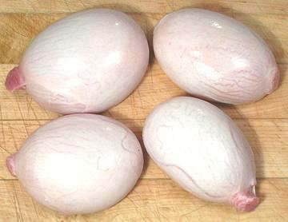

Lamb Testicles

[Lamb Fries, Sheep Nuts; Testiculos de Borrego (Spanish)]
Lamb Testicles are eaten by pretty much every culture where lamb is a
significant item in the diet. They're pretty good eating, but
unfortunately they are a bit scarce in North America. Here most male
sheep are castrated immediately after birth and their testicles are not
yet developed. Allowed to develop to maturity they're of pretty
impressive size.
The photo specimens were procured from a large multi-ethnic market
in Los Angeles, just under 1-1/2 pounds packed in a foam tray of 5. The
largest was 3-1/2 inches long, 2-1/2 inches diameter and weighed 5-7/8
ounces. The smallest was 3-1/4 inches long, 2 inches diameter and
weighed 3-5/8 ounces.
More on Lamb Innards.
Raw sheep testicles feel like little balloons filled with jelly. Cooked
they are tender, mild, and do not have any sheep meat taste or aroma. They
have been compared to bratwurst.
They are always skinned and most often sliced and fried coated in a light
batter. Around Lebanon they are cut smaller, fried without batter and served
with parsley, lemon juice and/or sumac.
Buying:
Lamb testicles are not easy to find in North
America, but are most often found packed in trays of 4 to 6 in markets
serving a heavily Middle Eastern community. They can be ordered from a
specialty butcher, but you may have to buy a whole box. In Australia,
New Zealand and the Balkans these are normal fare and more easily
available.
Storing:
Keep well refrigerated until used. Like other
organ meats they degrade rapidly and should be cooked within a day or so
from purchase.
Prep:
Rinse. Cut just a little off each end, run a knife,
sharp edge out, lengthwise just under the skin. Peel the skin off. This is
the hard part because the skin is very tough and what you're
peeling it off of is rather tender. They may then be sliced according to
the recipe. An alternative method is to slice them in half lengthwise
before peeling.
Cooking:
Sheep nuts cook very quickly if sliced. The are
most often fried and just a couple minutes in hot oil will do it.
as_ballz 100116 - www.clovegarden.com
©Andrew Grygus - agryg@clovegarden.com - Photos
on this page not otherwise credited © cg1
- Linking to and non-commercial use of this page permitted